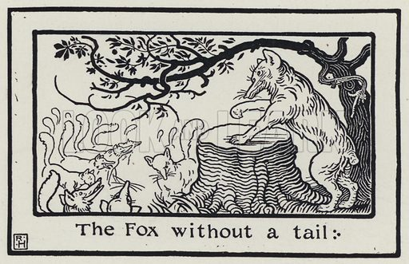

A FOX caught in a trap escaped, but in doing so lost his tail. Thereafter, feeling his life a burden from the shame and ridicule to which he was exposed, he schemed to convince all the other Foxes that being tailless was much more attractive, thus making up for his own deprivation. He assembled a good many Foxes and publicly advised them to cut off their tails, saying that they would not only look much better without them, but that they would get rid of the weight of the brush, which was a very great inconvenience. One of them interrupting him said, "If you had not yourself lost your tail, my friend, you would not thus counsel us."